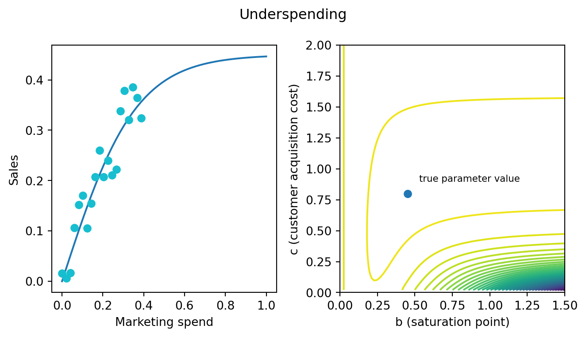
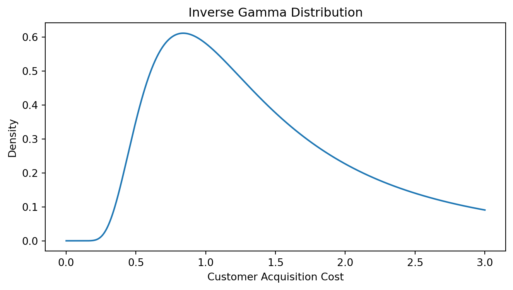

Geometric intuition for media mix models
Not just fancy linear regressions.
MMMs are just fancy linear regressions.
At my work, it is a common refrain. It is a meant as sarcastic reminder - don’t go crazy, don’t convince yourself you are doing something more complicated than you are. This is all still pretty ordinary statistics. I think it undersells some of the more delicate aspects of media mix models (MMMs). MMMs are really non-linear regressions. The intuitions that data scientists develop by studying the theory of linear statistics models can be misleading. MMMs are ungodly creatures. They follow their own set of rules. In this post, I want to draw a few sketches to give you some new intuitions about the behaviour of MMMs.
If you have two inputs that you want to add together and pass through a linear function, it doesn’t matter what order you do things in. Add and then pass to the function; pass and then add. Both yield the same result.
\[f(a+b) = f(a) + f(b)\]
Saturation functions are non-linear. It’s easy to see why. Suppose the function saturates at \(0.5\). If you pass two large quantities that both return something close to \(0.5\), then adding them up will be \(\approx(1)\). If, instead, you add the two large quantities and then pass to the saturation function, you get back \(\approx(0.5)\).
A common choice of saturation function is the tanh.
\[ b * \text{tanh}(\frac{x}{bc})\]
- \(b\) represents the saturation point. How many sales can you ever achieve by advertising on this channel.
- \(c\) represents the customer acquisition cost. This roughly translates to “how much money do you need to spend on this channel to acquire your first customer?”
The plan for the rest of this post is to explore how we estimate the parameters of a saturation function. We’ll look at small simulated data experiments - cases where we know the true parameters - and the corresponding likelihood surface. These will be extremely stripped down models. Nothing else going on but a saturation curve. We’ll see that a lot of surprising consequences arise from the geometry of the likelihood surface.
MMMs aren’t just about saturation functions. What about the adstock?
For sure, but adstock is a linear function. If you smear two small quantities out over time and then add them together, it’s the same as smearing one big quantity. All the really tricky stuff arises from the non-linearity introduced by saturation functions.
It’s not about how much data you have but how that data is distributed across the saturation curve.
Let’s suppose that your marketing department has been consistently and historically under-spending on a certain channel. At some point, popular wisdom took hold and the no one thinks cable tv ads are very effective. So the marketing team throws a few bucks toward cable each year and otherwise focuses on digital. Your observed data and resulting likelihood surface would look like:

It’s the same basic banana-shape but a lot sketching to the right. This indicates that the data is not terribly informative for the parameter value of the saturation point. How could it be? If you have never spent close to the saturation point, you will never find out when diminishing returns kicks in. This data can indicate a window of parameters that are plausible but it will never, in practice, converge to a single point. Below, I’ve highlighted a region of the surface where the value is within 1.5 logs of the global max.
This has a few big consequences for data science teams.
- Collecting more data may not help you if the data falls on the same place along the saturation curve. At this point, we have 20 observations. If you could persuade the marketing team to spend more money on cable for even one or two days, that would provide more information than doubling the size of the dataset.
- MMMs cannot confidently recommend things you have never tried. A marketing department might be curious whether they should spend more on cable. Given the evidence at hand, it is hard to say. The saturation point might be quite close to our current spending level (0.4) but it also might be very far away. At the very least, the parameter estimates we’d obtain would indicate that it is at least worth it to try to spend more. MMMs should be pitched as systematic summaries of the knowledge your company has acquired rather than as prophetic orbs.
Similar lessons apply for channels that the marketing team has historically overspent on.

If all our spending is near the saturation point, then we’ll have a pretty good idea of what that point is. But we won’t know how we got there: a fast saturation channel that spikes quickly and levels off or a smooth, gradual incline.
The region of nearly identical likelihood is just as bad for overspending. I’ve highlighted all the points that fall with in half a log of a max. These long tails of nearly equivalent likelihood can be quite problematic for summarizing the results of our model. In linear regression, the curvature around the maximum likelihood point is symmetrical. Here that’s not the case. The curvature is heavily asymmetrical. So if you are estimating posterior distributions, the mean of that posterior will not be particularly close to the max. The mean would be somewhere in the middle of that yellow band.
Reporting a mean like that to the marketing team could be quite misleading. It suggests the channel is very cheap. Maybe 50 cents of marketing material to convert the first customer. You don’t have a ton of options. Giving them a full distribution isn’t that helpful either. The distribution will say “customers could be free, very cheap or pretty expensive.” I suspect you’ll get questions about how we can trust models that are so uncertain and so on. There is a better way though - that statistically defensible, improves the stability of estimators and samplers, and will align with the marketing departments expectations.
Gentle priors, gentle penalties
We should appreciate that the cases where we overspend or underspend are probably the typical case. Marketer are managing finite budgets and put themselves at consider risk if they suddenly start spending a lot more on cable tv ads “just to try it.” Instead, in my experience, marketing teams then to follow a tradition built out of some trial and error, some folklore and so past marketing research. This means that industry datasets tend to have underexplored the saturation curve.
While our data cannot distinguish between some parameter values, our powerful minds can. Some of these parameter values are obviously implausible. Customers aren’t free. You cannot regularly persuade more than one person to buy something with a single impression. The folk wisdom of business suggest that marketing drives 5%-20% of sales. The saturation point cannot be larger than the entire potential customer base of your product. Statements like this allow us to slowly narrow the range of parameter values. Customer acquisition parameters can only go so low. Saturation points can only go so high.
We’d like to encode that information into the model. But we want to be as gentle as possible. The data should still do the talking. It’s just that a little bit of extra info can do a long way.
Consider the case of the customer acquisition cost. An appropriate prior might be the inverse Gamma distribution.

This prior trims off the super low acquisition costs and allows you to pick a best guess. But it has a nice long tail so it is consistent the scenario where the marketing channels are very ineffective. If the data drives the estimates up there, the model will listen.
Here is what the log likelihood surface looks like if add the prior. The region of near equivalence begins to become more symmetrical. The peak of the surface moves away from the super low, implausible parameter values. In this way, prior serve as guardrails - in the absence of data-driven information, the prior can control the behaviour of the model. However, the prior clearly isn’t overpowering the data. The structure of the likelihood surface is almost exactly as it was before we added the prior.
A similar lesson could be extended for the underspend case. Pruning very large saturation points will have the same effect. In this case, a Gamma distribution might be a nice choice because it has thin tails for the high values and doesn’t eliminate small \(b\) values.
There is no need to wait until you discover a channel has over spend or under spend. In practice, you won’t know when you are in one regime or another. Develop some gentle, default priors in collaboration with the marketing team and apply them all channels. In the good cases, it won’t hurt. In the bad cases, it can really help.
This is all Bayesian stuff, how does this apply to frequentist or ML frameworks?
I’ll be honest. I don’t really know anything about frequentism. But I’m told on good authority that you all use penalties and constraints to decrease the variance of estimators. If you can accomplish the same thing I sketched above with those tools, great. If you cannot, I’m concerned for you and recommend trying out Bayesian tools, at least for MMMs.
Take home lessons
MMMs are not like linear regressions in a few key places.
- The precision of your parameter estimates will not necessarily increase with the size of the data set. What really matters is how well the data is distributed across the saturation curve.
- They tend to be uncertain about the effects of marketing strategies you have never tried.
- Point estimates can be fairly misleading without care in how they are communicated.
- Modest prior constraints are often plausible and helpful in making posteriors easier to communicate and summarize.
I won’t sketch these ideas out here. But in future blog posts, I also want to explore a couple of other consequences:
- Hamiltonian Monte Carlo techniques should use dense mass matrix adaptations on MMMs.
- MMMs can have multi-modal likelihood surfaces once complexity of the model increases even a little bit.